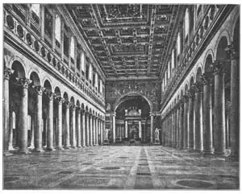

68
EARLY CHRISTIAN
早期基督教建筑

IF YOU get up in the morning at sunrise you might call yourself an early Christian. But early Christian in architecture does not mean early in the day; it means early in the history of Christians. Some of our finest buildings to-day are Christian churches, but once upon a time the only Christian churches were holes in the ground.
These holes were called catacombs. They were tunnels that were dug underground in Rome because the Christians were persecuted. That means they were punished just for being Christians and so they had to live in hiding. They hid in the dark secret passages of the catacombs. In the catacombs were rooms where Christians could “go to church.” There were rooms there, too, where dead Christians were buried safely.
It was like living in a coal mine, only worse, because when a Christian was caught by the Roman soldiers, he was generally given to the lions or burned alive or chopped to pieces. Suppose you had to live down underground and never could come up without danger of getting caught and killed. It might be exciting and fun at first, but when you found some of your friends or perhaps even your brother or your aunt or your father had been carried off and put to death, it would not be fun at all.
So you can imagine how glad the Christians who lived in the catacombs must have been when the Roman emperor himself became a Christian.
This first Christian emperor was named Constantine. When Constantine became a Christian, naturally the Christians could come up out of the catacombs and worship God above ground. The Christians found the best kind of buildings above ground for their church services were the basilicas. You remember basilicas were the buildings built by the Romans for court-houses. In the court-houses the judge sat in the middle at one end, with his back toward the end wall. In front of the judge was a long aisle with columns on each side and this aisle led to the front door. On each side of the main aisle was another aisle. Here is a plan or kind of map of a basilica. Make believe you are looking straight down from an airplane at the basilica and that the basilica has its roof taken off. The lines are the walls and the dots are the columns. The place where the judge sat is the half circle at the top of the plan.
You can have some fun with paper and pencil, making a plan of your own house. If you imagine everything above the first story taken off the house, you could make a plan of the first floor. If your house has three floors, you might make a plan for each of the three. When I was a boy I used to like to draw plans of make-believe houses and I generally had a swimming pool and a gymnasium and a soda water fountain in my make-believe plans.
But let’s get back to the basilica. The Christians used the judge’s half circle in their basilica church for an altar and for the minister or priest to preach from. This part of the building had lattice-work railings in front of it called cancelli by the Romans. That’s why some churches still call the minister’s end of the church the chancel. The people who came to worship in the basilica sat on benches facing the chancel—just as they do in some churches to-day. The main central part of a church is called a nave. The chancel and the aisles on the side are not part of the nave.
The windows in a basilica were way up near the roof. The center part, or nave, was higher than the side aisles and so the center part’s roof was higher than the side aisle roofs. The nave was really two stories high and the side aisles only one story high. The windows were in the second story of the nave. This part with the windows was called the clerestory which means clear story. I think you can guess why it is called that.
From the outside, these basilicas weren’t much to look at. A good many of them looked more like big barns than anything else. But inside they were magnificently decorated. The columns were beautiful marble ones taken from old heathen buildings. The walls had mosaic pictures on them made of little pieces of stone or of colored glass which shone like jewels. The floors and lower walls were covered with fine slabs of marble. After the catacombs they must have seemed all the more magnificent to the early Christians.
The largest of these early Christian basilicas is the church of St. Paul-without-the-Wall. You might think from its name that it didn’t have any walls, What its name really means is that the church of St. Paul is outside the wall of Rome. It has a main part, or nave, and two aisles on each side instead of one on each side. Here is a picture of the inside looking along the nave toward the chancel.
You can see the clerestory windows very plainly. St. Paul-without-the-Wall was built, way back in 380 A.D. and people worshiped there for more than 1400 years. Then in 1823 it caught fire and burned down. But it was built again just the way it was before the fire and so you can still visit it when you go to Rome.

No.68-2 INTERIOR OF ST. PAUL（圣保罗大教堂室内）
Courtesy of The University Prints
This chapter has four new hard words. See what score you can make without looking back in the book. Each word you can give the right meaning for—out loud—counts 25. Can you score 100?
| plan (in architecture) | □ | |
| nave | □ | |
| chancel | □ | |
| clerestory | □ | |
| Score: ______ |
【中文阅读】
如果你在太阳刚升起的时候起床，那你就可以称自己为早起的基督徒。但建筑上的“基督教早期阶段”并不意味着一天的早晨；它只意指基督教的早期历史。我们至今最好的建筑还是基督教堂，但早期阶段只有基督教堂是在地下开辟洞穴的。
这些洞穴被称作地下墓穴。它们是挖在罗马地底下的通道，因为那时的基督徒备受迫害。也就是说，他们遭受迫害仅仅因为他们是基督徒，所以他们不得不过着东躲西藏的生活。他们躲在底下墓穴黑暗的秘密通道中。地下墓穴有可供基督徒“做礼拜”的房间。那儿还有基督徒死后可以安葬的地方。
生活在那儿就像生活在煤矿里一样，甚至还不如呢，因为基督徒一旦被罗马士兵抓住，就会被送去喂狮子，或被活埋，或被碎尸万段。假设你为避免被抓或被杀的危险，不得不住在地下室里，而且永远不出来。起先你可能还会觉得刺激好玩，但当你看到你朋友甚至可能是你兄弟、你姨妈，或你父亲被抓走，被处死，你就会觉得那可不是闹着玩的了。
可以想象当罗马皇帝自己成为基督徒时，那些住在地下墓穴的基督徒有多开心啊。
第一位信仰基督教的皇帝叫君士坦丁。当君士坦丁归入基督时，基督徒们也就顺理成章地从地下墓穴里走出来了，他们开始在地面上敬拜上帝。他们发现地面上最适合给教会做礼拜的建筑是“长方形教堂”。你应该还记得罗马人用这种长方形廊柱大厅式建筑作法院。在法庭上，法官背靠后墙，坐在一端的中央，面对一条长廊通往前门，两旁都是立柱。主道的两边各有一条侧廊。下面是一幅长方形教堂的平面图。
假设你正从飞机上俯视一座拆了屋顶的长方形教堂。实线代表墙壁，虚线代表廊柱。原先法官就坐在平面图顶端的半圆形上。
你可以用纸和铅笔做个游戏，给你自己的家画个平面图。如果你试想把一楼所有的东西都搬走的话，你就可以画出一楼的平面图了。如果你们家房子有三层，那你可 以把每一层的平面图都画出来。我小时候，就常常喜欢画假想中的房屋平面图，比如游泳池、健身房，还有苏打水喷泉。
还是让我们再回到长方形教堂吧。基督徒把长方形教堂的半圆形用做祭坛，供牧师或神父向会众布道。教堂的这部分区域的前方设有格子细工栏杆，罗马人称这个区域为“圣坛”。这就是为什么某些教堂直到今天仍然称牧师在教堂顶头布道的区域为“高坛”。来教堂礼拜的人面朝高坛坐在长凳上——就像今天信徒们在有些教堂里所做的那样。教堂的中央区域叫做“中殿”。高坛和两边的侧廊都不属于中殿。
长方形教堂的窗户离屋顶很近。中央部分，即中殿，比侧廊所对应的顶端要高。中殿实际上有二层楼那么高，而侧廊所对应的顶端实际上只有一层楼那么高。窗户则在中殿二楼那么高的位置。这一部分和窗户一并被称作“天窗”，意指在屋顶开口。我想你能猜得出它为什么叫这个名字。
从外部看来，这类教堂没啥好看的。很多教堂看起来更像是大谷仓，仅此而已。可是教堂里面却装饰得富丽堂皇。柱子是从古代异教建筑里拆出来的漂亮的大理石柱。墙上有嵌花式图案，由小石片或彩色玻璃制成，像珠宝一样闪耀着夺目的光芒。矮墙壁和地板上都贴着精美的大理石瓷砖。对那些从地下墓穴里出来的早期基督徒来说，这些教堂看上去一定格外地壮观。
早期最大的长方形教堂是圣保罗大教堂（墙外）。从它的名字也可以推测它不在任何墙内。这样命名的真正含义是圣保罗大教堂建在罗马城墙外。它有一个主体部分，或叫中殿，而且两边各有两条侧廊，而不是一条。下图是从内部由中殿向高坛的纵深图。
天窗在你面前一览无余。圣保罗大教堂（墙外）建于公元前380年，供人礼拜已有一千四百多年的历史了。1823年一场火灾烧毁了教堂。但之后又照原样予以重建，所以你若去罗马仍然可以参观它。
这一章出现了四个难理解的新词。在不翻书的情况下看看你能得几分。请给出每个词的具体意思。每题25分。你能得100分吗？
| （建筑物的）平面图 | □ | |
| 中殿 | □ | |
| 高坛 | □ | |
| 天窗 | □ | |
| 总分：____ |